Play 3.0 brings a fresh new look, featuring a gorgeous new app icon designed by Iconfactory, a redesigned tab bar navigation, and beautiful video details inspired by Liquid Glass. Discover videos, channels, movies, and TV shows with the new unified Search tab, and enjoy a more streamlined Subscriptions experience. Plus, improved widgets, new customization options, and plenty of refinements and bug fixes across the app.
On iPhone, Play 3.0 adopts a new tab bar navigation that puts Library, Subscriptions, and Search within easy reach. I think it’s a much better way to organize the app and navigate between its main sections, and I’m really happy with how it turned out.
Video details have also been redesigned with custom themes inspired by each video. This approach feels much more at home with Liquid Glass, and I think it looks a lot better, too. Landscape layouts have also been rethought to make better use of the available space, including on iPhone Duo.
And to celebrate the new look, Play 3.0 also gets a beautiful new app icon designed by Iconfactory! I designed the original icon myself, but I’m no icon designer, so I’ve wanted to have it professionally redesigned for a long time. I’ve always admired Iconfactory’s work, so this felt like the perfect opportunity to finally make it happen.
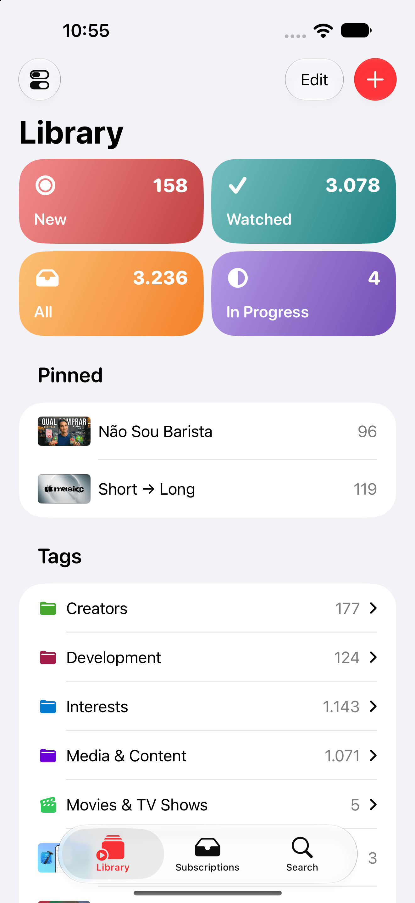
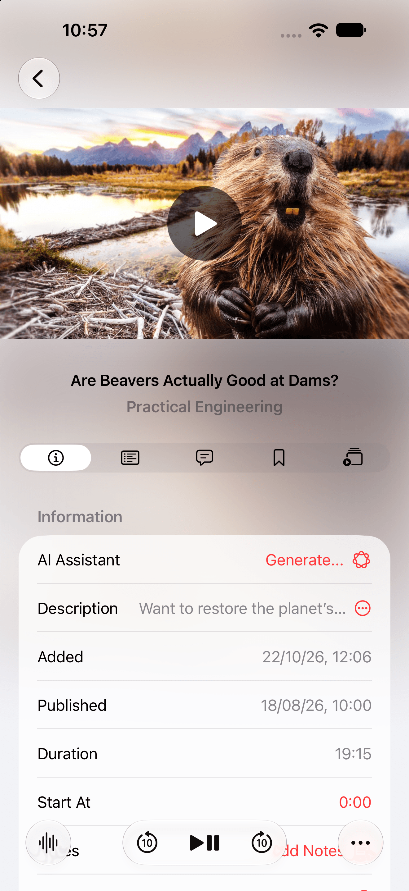
The new unified Search tab brings together finding something you’ve already saved and discovering something new to watch. You can search your Library, explore YouTube videos and channels, and find movies and TV shows to add to your Library, all in one place and without having to leave the app.
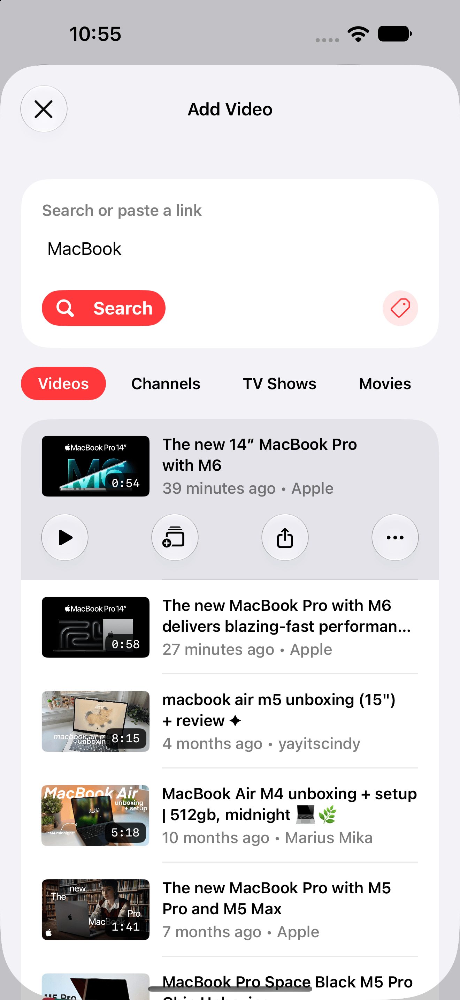
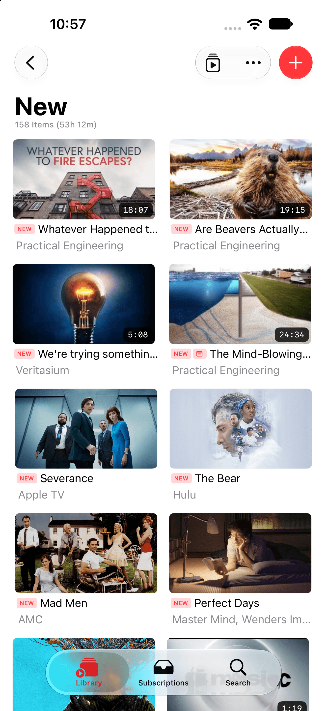
Channels Inbox is now called Subscriptions. The new name comes with a more direct way to work through new uploads: tap a video to reveal quick actions to watch it, save it to your Library, or discard it.
I’ve also redesigned the setup experience to make getting started easier. You can easily subscribe to popular channels or import subscriptions from videos in your Library, a Google Takeout file, or an OPML file.
Once you’re set up, improved progress indicators show what’s happening as Play checks for new uploads or saves videos to your Library. As always, your feed stays in chronological order, free from algorithmic recommendations.
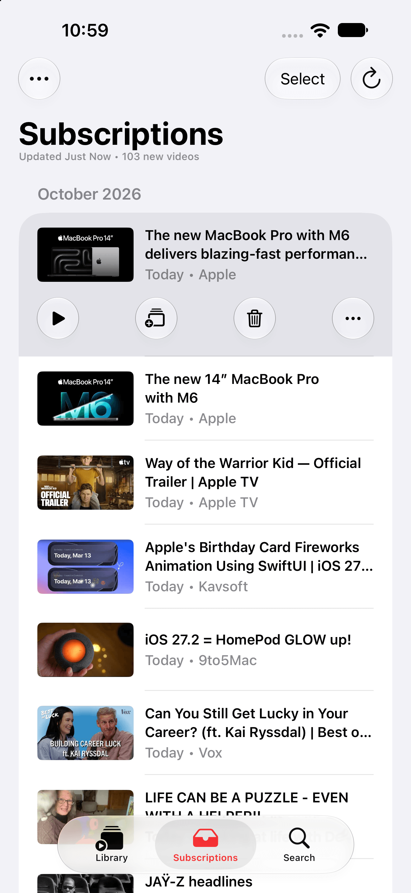
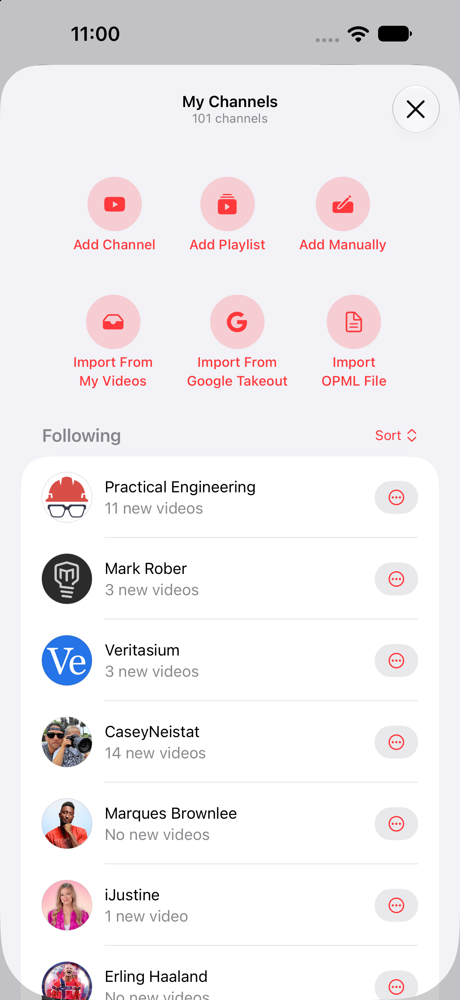
Smart Searches are now called Collections: custom lists that bring together videos matching your chosen filters. On supported systems, Describe your Collection lets you explain what you’re looking for in natural language and have Apple Intelligence build the filters for you.
AI Assistant also offers a clearer path forward when Apple Intelligence can’t process a video’s content. Try a concise summary instead, or export the transcript to another AI app to continue there.
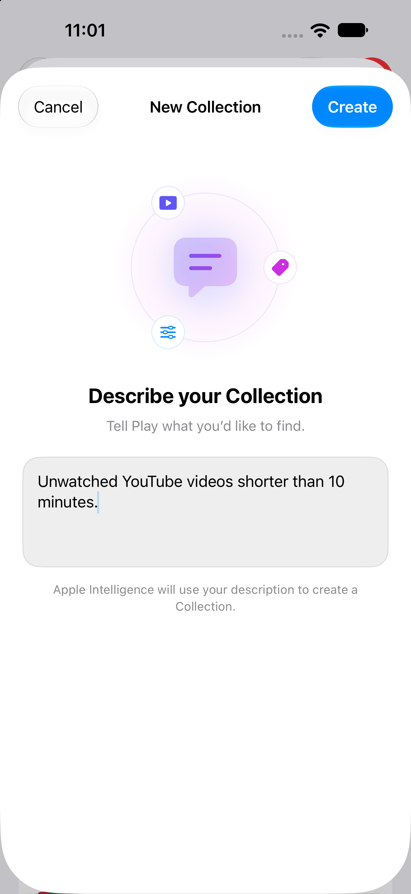
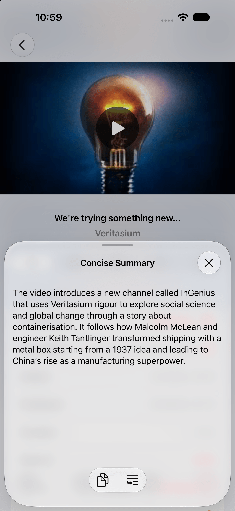
Widgets offer clearer filter options and improved artwork layouts, making it easier to access the right set of your Library on your Home Screen. Tap a widget to open its configured tag or Collection directly in Play.
The medium widget can now show total duration, helping you see how much viewing time is waiting in your queue.
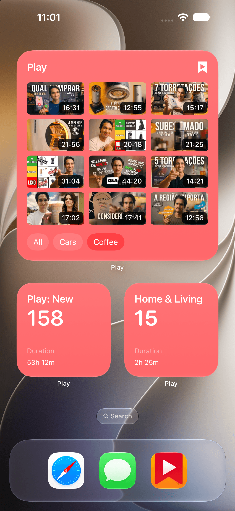
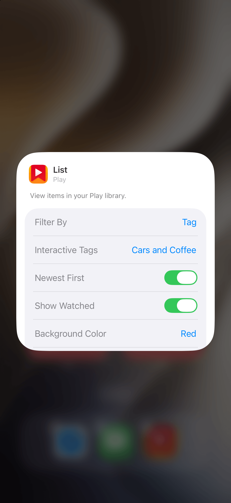
Sidebar sections can now be collapsed, and Play remembers their state between launches. The notes editor supports Command-S to save changes, and the Subscriptions window can be resized.
These improvements sit alongside built-in video and catalog search, making it easier to find, organize, and enjoy your videos on the Mac.
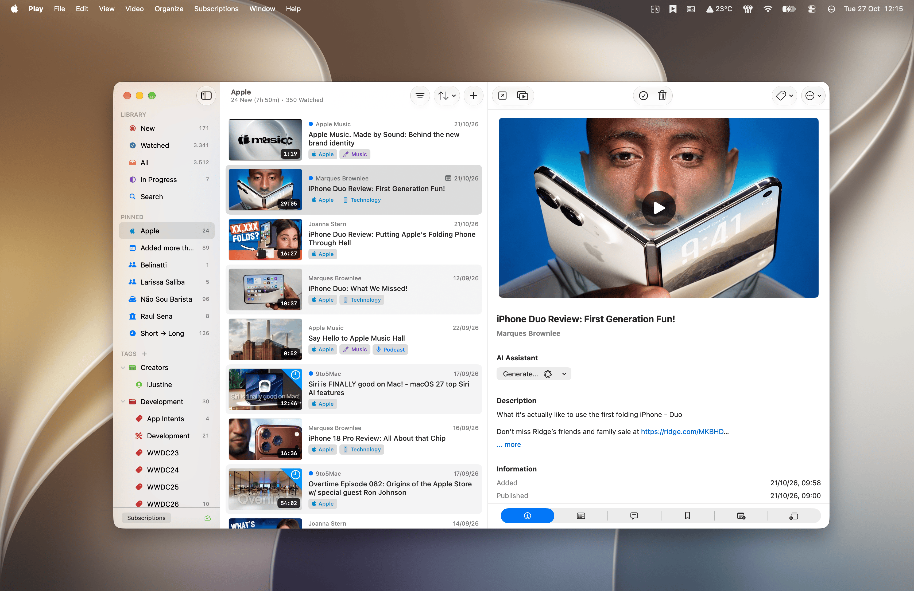
Play is available for iPhone, iPad, Mac, Apple TV, and Apple Vision Pro. It is free to download, with optional Play Premium purchases for additional capabilities.
For pricing, system requirements, the full feature overview, and screenshots for each platform, visit the Play Press Kit.